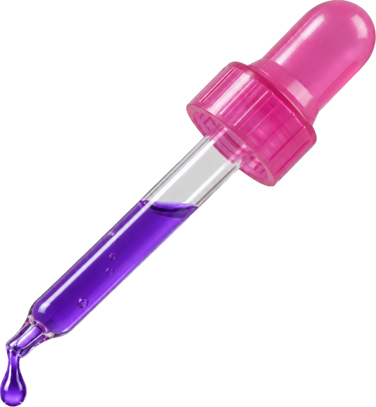
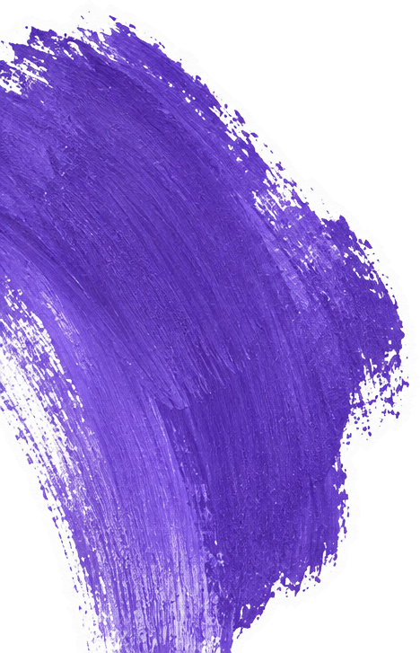
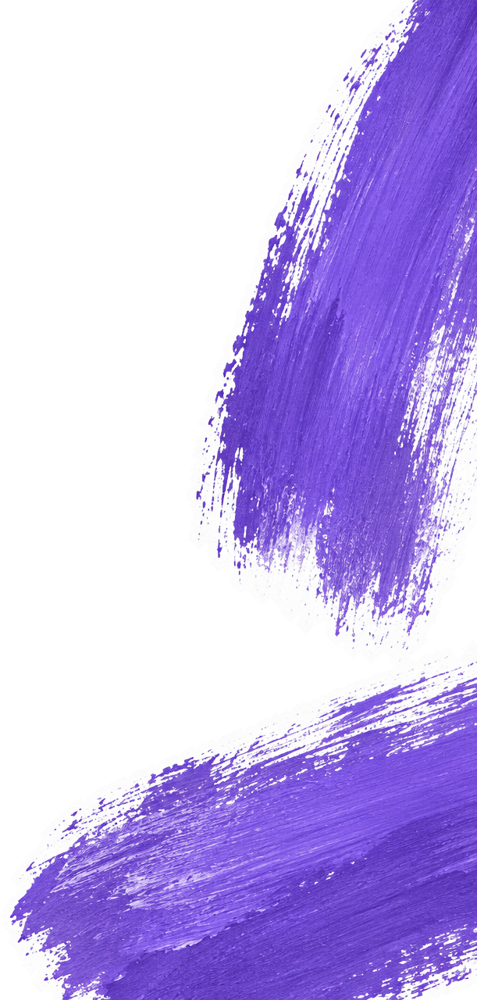
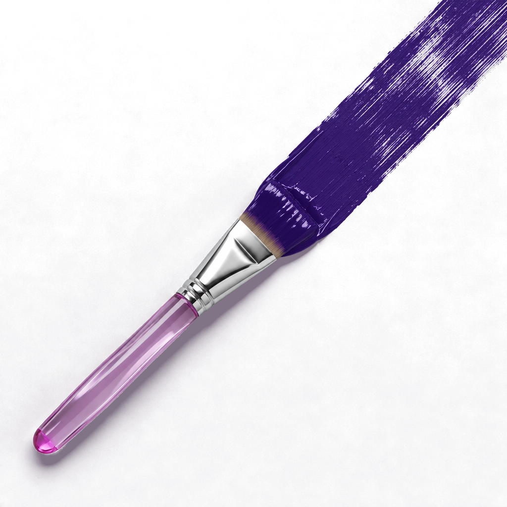
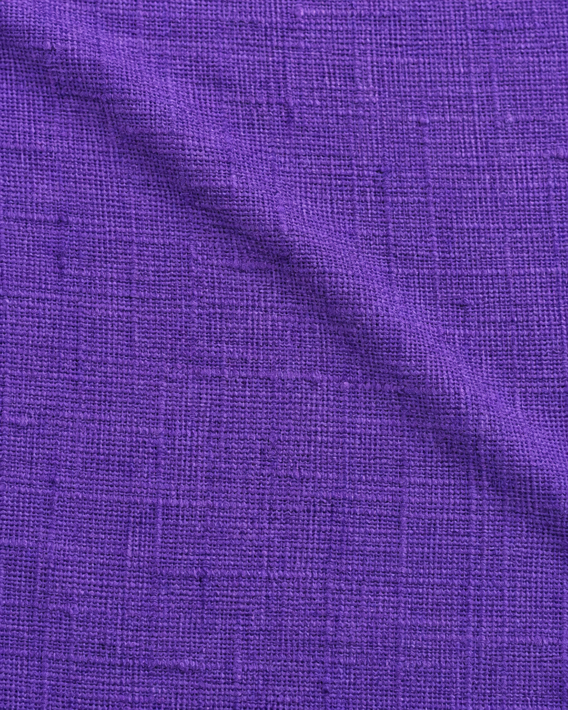
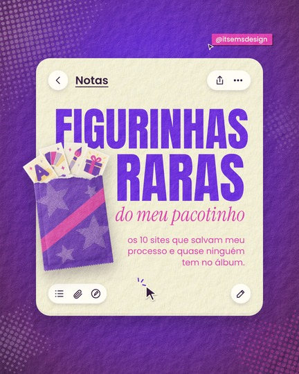

<!doctype html>
<html lang="pt-BR">
<head>
<meta charset="utf-8">
<title>EMS · figurinhas raras</title>
<link rel="stylesheet" href="estilo.css">
<script src="textos.js"></script>
<style>
  /* v4: diagramação das referências da Emi (pinterest-emi/), sem foto; fundos só violeta ou marfim */
  .g { position: absolute; font-family: var(--serif); font-weight: 400; letter-spacing: -.035em; line-height: .78; white-space: nowrap; }
  .g.i { font-style: italic; letter-spacing: -.02em; }
  .pilula-ref { display: table; font-family: var(--sans); font-weight: 600; line-height: 1; letter-spacing: -.02em; padding: .12em .32em .16em; border-radius: .26em; }
  .micro { position: absolute; font-family: var(--sans); font-size: 17px; line-height: 1.05; text-align: justify; text-align-last: justify; }
  .barra { position: absolute; display: flex; gap: 26px; align-items: center; padding: 30px 190px 30px 34px; border-radius: 26px 0 0 26px; }
  .barra .fio { width: 4px; align-self: stretch; border-radius: 2px; }
  .barra .nome { font-family: var(--serif); font-size: 64px; line-height: .9; letter-spacing: -.02em; display: block; }
  .barra .pra { font-family: var(--sans); font-size: 26px; line-height: 1.25; display: block; margin-top: 8px; }
  .hora { position: absolute; left: 90px; font-family: var(--sans); font-size: 21px; color: rgba(42,20,51,.45); }
</style>
</head>
<body>
<div class="faixa" id="faixa">
  <div class="camada" id="fundos"></div>
  <div class="camada" id="pontes"></div>
  <div class="camada" id="conteudos"></div>
  <div class="camada" id="ponte-frente"></div>
  <div class="camada" id="graos"></div>
</div>
<script>
const W = 1080, H = 1350;
const params = new URLSearchParams(location.search);
const N = +(params.get('n') || 7);
document.getElementById('faixa').style.width = (N * W) + 'px';
document.body.style.width = (N * W) + 'px';
const css = (k) => getComputedStyle(document.documentElement).getPropertyValue('--' + k).trim();
const A = window.ALBUM;
function ruido(tam, freq, oct, seed) {
  const svg = `<svg xmlns='http://www.w3.org/2000/svg' width='${tam}' height='${tam}'><filter id='f'><feTurbulence type='fractalNoise' baseFrequency='${freq}' numOctaves='${oct}' seed='${seed}' stitchTiles='stitch'/><feColorMatrix type='saturate' values='0'/></filter><rect width='100%' height='100%' filter='url(%23f)'/></svg>`;
  return `url("data:image/svg+xml;utf8,${svg}")`;
}
document.documentElement.style.setProperty('--tx-grao', ruido(300, 0.95, 3, 11));
document.documentElement.style.setProperty('--tx-papel', ruido(520, '0.012 0.35', 4, 5));
const relevo = (tam, freq, oct, seed, alt) => `url("data:image/svg+xml;utf8,<svg xmlns='http://www.w3.org/2000/svg' width='${tam}' height='${tam}'><filter id='p'><feTurbulence type='fractalNoise' baseFrequency='${freq}' numOctaves='${oct}' seed='${seed}' stitchTiles='stitch'/><feDiffuseLighting lighting-color='white' surfaceScale='${alt}'><feDistantLight azimuth='225' elevation='55'/></feDiffuseLighting></filter><rect width='100%' height='100%' filter='url(%23p)'/></svg>")`;
document.documentElement.style.setProperty('--tx-relevo', relevo(700, 0.035, 5, 3, 2.2));
document.documentElement.style.setProperty('--tx-fibras', relevo(500, '0.6 0.05', 2, 8, 1.2));

/* estrela da marca (i-estrela, chapada, com brilho) no lugar do emoji de estrela das refs */
const ESTRELA = 'M0,-1 L0.24,-0.33 L0.95,-0.31 L0.39,0.13 L0.59,0.81 L0,0.41 L-0.59,0.81 L-0.39,0.13 L-0.95,-0.31 L-0.24,-0.33Z';
const estrela = ({ x, y, tam, r = 0 }) => `<svg class="abs" style="left:${x}px;top:${y}px;width:${tam}px;height:${tam}px;transform:rotate(${r}deg);filter:drop-shadow(2px 4px 3px rgba(42,20,51,.3))" viewBox="-1.1 -1.1 2.2 2.2">
  <defs><radialGradient id="ge${x}${y}" cx=".38" cy=".3" r=".8"><stop offset="0" stop-color="#fff6c9"/><stop offset=".55" stop-color="${css('manteiga')}"/><stop offset="1" stop-color="#d9a94a"/></radialGradient></defs>
  <path d="${ESTRELA}" fill="url(#ge${x}${y})" stroke="#c99a3e" stroke-width=".05" stroke-linejoin="round"/></svg>`;
const CURSOR = `<svg viewBox="0 0 24 24"><path d="M3 2 L20 11 L12 13 L8 21 Z" fill="${css('tinta')}" stroke="${css('ivory')}" stroke-width="2" stroke-linejoin="round"/></svg>`;
const cursor = (x, y, tam = 54) => `<svg class="abs" style="left:${x}px;top:${y}px;width:${tam}px;filter:drop-shadow(1px 2px 1px rgba(42,20,51,.3))" viewBox="0 0 24 24"><path d="M3 2 L3 19 L8 14.5 L11.5 22 L14.5 20.6 L11 13.4 L17.6 13.2 Z" fill="${css('ivory')}" stroke="${css('tinta')}" stroke-width="1.4" stroke-linejoin="round"/></svg>`;
const handle = (x, y, bg = 'var(--pink)') => `<div class="handle" style="left:${x}px;top:${y}px;--bg:${bg}">@itsemsdesign${CURSOR}</div>`;
const objeto = ({ x, y, w, r = 0, src }) => ``;
const pasta = (x, y, w, r, cor) => `<svg class="abs" style="left:${x}px;top:${y}px;width:${w}px;transform:rotate(${r}deg);filter:drop-shadow(0 10px 12px rgba(42,20,51,.25))" viewBox="0 0 130 100">
  <path d="M8 14 Q8 6 16 6 H50 Q56 6 59 12 L63 18 H116 Q124 18 124 26 V88 Q124 96 116 96 H16 Q8 96 8 88 Z" fill="${cor}"/>
  <path d="M8 32 Q8 26 14 26 H118 Q124 26 124 32 V88 Q124 96 116 96 H16 Q8 96 8 88 Z" fill="${cor}" opacity=".88"/>
  <path d="M8 32 Q8 26 14 26 H118 Q124 26 124 32 V36 H8Z" fill="#fff" opacity=".12"/></svg>`;

const camada = (id) => document.getElementById(id);
function lamina(k, html, fundo, grao = 'grao') {
  if (k >= N) return;
  camada('fundos').insertAdjacentHTML('beforeend', `<div class="lamina" style="left:${k * W}px">${fundo}</div>`);
  camada('conteudos').insertAdjacentHTML('beforeend', `<div class="lamina" id="l${k}" style="left:${k * W}px">${html}</div>`);
  camada('graos').insertAdjacentHTML('beforeend', `<div class="lamina" style="left:${k * W}px"><div class="${grao}"></div>${params.has('guia') ? '<div class="guia"></div>' : ''}</div>`);
}

/* ================= 1 · capa — diagramação da ref 6 (cartão de Notas sobre fundo rico) ================= */
/* estrela em retícula da EMS (HalftoneStar): pontos que diminuem do centro para a borda */
function estrelaReticula(tam, cor, passo = 18) {
  const cv = document.createElement('canvas'); cv.width = cv.height = tam; const ctx = cv.getContext('2d');
  const c = tam / 2, R = tam / 2, m = document.createElement('canvas').getContext('2d'); m.canvas.width = m.canvas.height = tam;
  m.beginPath(); for (let i = 0; i < 10; i++) { const a = -Math.PI / 2 + i * Math.PI / 5, rr = i % 2 ? R * .45 : R * .95; m.lineTo(c + rr * Math.cos(a), c + rr * Math.sin(a)); } m.closePath();
  ctx.fillStyle = cor;
  for (let y = passo / 2; y < tam; y += passo) for (let x = passo / 2; x < tam; x += passo) {
    if (!m.isPointInPath(x, y)) continue;
    const d = Math.hypot(x - c, y - c) / R; ctx.beginPath(); ctx.arc(x, y, passo * .46 * Math.max(.14, 1 - d * .95), 0, 7); ctx.fill();
  }
  return cv.toDataURL();
}
const BRILHO4 = 'M0,-1 C0.07,-0.27 0.27,-0.07 1,0 C0.27,0.07 0.07,0.27 0,1 C-0.07,0.27 -0.27,0.07 -1,0 C-0.27,-0.07 -0.07,-0.27 0,-1Z';
const brilho4 = (x, y, tam, cor, r = 0) => `<svg class="abs" style="left:${x}px;top:${y}px;width:${tam}px;height:${tam}px;transform:rotate(${r}deg);filter:drop-shadow(0 8px 10px rgba(42,20,51,.35))" viewBox="-1 -1 2 2"><path d="${BRILHO4}" fill="${cor}"/></svg>`;
(() => {
  const ic = (d, w = 40) => `<svg viewBox="0 0 24 24" style="width:${w}px;height:${w}px" fill="none" stroke="${css('tinta')}" stroke-width="1.8" stroke-linecap="round" stroke-linejoin="round">${d}</svg>`;
  const botao = (conteudo, extra = '') => `<div style="display:flex;align-items:center;gap:26px;padding:16px 20px;border-radius:999px;background:#fffdf4;box-shadow:0 6px 14px rgba(42,20,51,.16), inset 0 -2px 0 rgba(42,20,51,.06);${extra}">${conteudo}</div>`;
  const CX = 130, CY = 210;           // canto do cartão
  lamina(0, `
    
    
    
    <div class="abs" style="left:${CX}px;top:${CY}px;width:820px;height:930px;border-radius:52px;background:var(--ivory);box-shadow:0 30px 60px rgba(42,20,51,.45), inset 0 -10px 0 rgba(42,20,51,.05)">
      <div class="abs" style="inset:0;border-radius:52px;background-image:var(--tx-relevo);background-size:620px;mix-blend-mode:multiply;opacity:.38"></div>
      <div class="abs" style="inset:0;border-radius:52px;background-image:var(--tx-fibras);background-size:460px;mix-blend-mode:multiply;opacity:.3"></div>
      <div class="abs" style="left:44px;right:44px;top:44px;display:flex;align-items:center;gap:26px">
        ${botao(ic('<path d="M15 5l-7 7 7 7"/>'), 'padding:16px;')}
        <span style="font-family:var(--sans);font-weight:600;font-size:40px;color:var(--tinta);text-decoration:underline;text-underline-offset:8px;text-decoration-thickness:3px">Notas</span>
        <div style="flex:1"></div>
        ${botao(ic('<path d="M12 15V3M8 7l4-4 4 4"/><path d="M6 11v9h12v-9"/>') + ic('<circle cx="5" cy="12" r="1.3" fill="#2a1433"/><circle cx="12" cy="12" r="1.3" fill="#2a1433"/><circle cx="19" cy="12" r="1.3" fill="#2a1433"/>'), 'padding:16px 26px;')}
      </div>
      <div class="abs" style="left:66px;top:182px;font-family:'Anton';font-size:166px;line-height:.9;color:var(--violeta)">FIGURINHAS</div>
      <div class="abs" id="capa-raras" style="right:66px;top:344px;font-family:'Anton';font-size:196px;line-height:.9;color:var(--violeta)">RARAS</div>
      <div class="abs" id="capa-pac" style="right:66px;top:528px;font-family:var(--serif);font-style:italic;font-size:80px;line-height:1;color:var(--pink);white-space:nowrap">do meu pacotinho</div>
      <div class="abs" style="right:66px;top:636px;width:430px;text-align:right;font-family:var(--sans);font-size:31px;line-height:1.3;color:var(--pink)">os 10 sites que salvam meu processo e quase ninguém tem no álbum.</div>
      <div class="abs" style="left:44px;bottom:44px">${botao(ic('<path d="M4 6h1M9 6h11M4 12h1M9 12h11M4 18h1M9 18h11"/>') + ic('<path d="M21 12.5l-8.5 8.5a5 5 0 01-7-7L14 5.5a3.3 3.3 0 014.7 4.7L10.2 18.7a1.7 1.7 0 01-2.4-2.4L15.5 8.6"/>') + ic('<circle cx="12" cy="12" r="9"/><path d="M9 16l1-4 5-5 2 2-5 5-3 2z"/>'))}</div>
      <div class="abs" style="right:44px;bottom:44px">${botao(ic('<path d="M4 20h4L19 9l-4-4L4 16v4z"/><path d="M13 7l4 4"/>'), 'padding:16px;')}</div>
    </div>
    ${objeto({ x: CX - 30, y: CY + 300, w: 318, r: -7, src: 'pacotinho' })}
    <!-- nome fora do cartão, no alto à direita -->
    <div class="handle" style="right:96px;top:122px;--bg:var(--pink);font-size:24px">@itsemsdesign${CURSOR}</div>
    <!-- o clique é no cartão, embaixo e no meio: como se abrisse a nota -->
    <svg class="abs" style="left:520px;top:${CY + 930 - 112}px;width:62px;filter:drop-shadow(1px 3px 2px rgba(42,20,51,.35))" viewBox="0 0 24 24"><path d="M3 2 L3 19 L8 14.5 L11.5 22 L14.5 20.6 L11 13.4 L17.6 13.2 Z" fill="${css('tinta')}" stroke="${css('ivory')}" stroke-width="1.5" stroke-linejoin="round"/></svg>
    <svg class="abs" style="left:478px;top:${CY + 930 - 142}px;width:50px" viewBox="0 0 40 40" fill="none" stroke="${css('violeta')}" stroke-width="3.2" stroke-linecap="round"><path d="M30 24 L38 26"/><path d="M26 16 L31 9"/><path d="M18 14 L17 5"/></svg>
  `, `<div class="abs" style="inset:0;background:radial-gradient(ellipse at 50% 42%, var(--violeta-2) 0%, var(--violeta) 38%, var(--plum) 80%, var(--ameixa) 100%)"></div>
      <div class="abs" style="inset:0;background-image:var(--tx-relevo);background-size:620px;mix-blend-mode:multiply;opacity:.5"></div>
      <div class="abs" style="inset:0;background-image:var(--tx-fibras);background-size:460px;mix-blend-mode:multiply;opacity:.35"></div>`, 'grao-forte');
})();

/* ================= 2 · pesquisa — diagramação da ref 8 (agenda) ================= */
const PAUTA0 = 150, PASSO = 108;
const FOLHA = `<div class="abs" style="inset:0;background:var(--ivory-2)"></div>
      <div class="abs" style="inset:0;background-image:var(--tx-relevo);background-size:700px;mix-blend-mode:multiply;opacity:.6"></div>
      <div class="abs" style="inset:0;background-image:var(--tx-fibras);background-size:500px;mix-blend-mode:multiply;opacity:.4"></div>
      <div class="abs" style="left:176px;top:0;bottom:0;width:2px;background:rgba(91,33,108,.28)"></div>
      <div class="abs" style="inset:0;background:repeating-linear-gradient(to bottom, rgba(91,33,108,.24) 0 2px, transparent 2px ${PASSO}px);background-position:0 ${PAUTA0}px"></div>
      <div class="abs" style="inset:0;background:radial-gradient(ellipse at 50% 45%, transparent 55%, rgba(91,33,108,.10))"></div>`;
(() => {
  const p = A.paginas[0], [s1, s2] = p.sites;
  const horas = ['9h', '10h', '11h', '12h', '13h', '14h', '15h', '16h', '17h', '18h', '19h'];
  const linhas = horas.map((h, i) => `<div class="hora" style="top:${PAUTA0 + PASSO * i - 13}px">${h}</div>`).join('');
  lamina(1, `
    <div class="abs" style="left:0;right:0;top:92px;text-align:center;font-family:var(--sans);font-size:24px;color:var(--tinta)">itsemsdesign <b style="font-weight:600">| álbum de figurinhas</b></div>
    ${linhas}
    ${pasta(206, 186, 150, -6, css('violeta'))}
    ${cursor(316, 254, 52)}
    <div class="abs" style="right:90px;top:276px;text-align:left;font-family:var(--sans);font-weight:500;font-size:46px;line-height:1.02;color:var(--tinta);letter-spacing:-.015em">pra achar referência<br>sem depender do</div>
    <div class="g" id="alg" style="left:196px;top:420px;font-size:236px;color:var(--violeta)">algoritmo</div>
    ${estrela({ x: 920, y: 392, tam: 84, r: 14 })}
    ${estrela({ x: 186, y: 612, tam: 70, r: -10 })}
    <div class="barra" style="left:360px;right:0;top:800px;background:var(--lavanda-2)">
      <div class="fio" style="background:var(--violeta)"></div>
      <div><span class="nome" style="color:var(--violeta)">${s1.nome}</span><span class="pra" style="color:var(--tinta)">${s1.pra}</span></div></div>
    <div class="barra" style="left:250px;right:0;top:1008px;background:var(--lavanda)">
      <div class="fio" style="background:var(--tinta)"></div>
      <div><span class="nome" style="color:var(--tinta)">${s2.nome}</span><span class="pra" style="color:var(--tinta)">${s2.pra}</span></div></div>
    ${pasta(880, 1068, 140, 8, css('violeta'))}
    ${cursor(974, 1132, 50)}
    
    <div class="abs" id="lente" style="inset:0"><div class="abs" id="lente-in" style="inset:0">${FOLHA}</div>
      <div class="abs" id="brilho-lente" style="inset:0"></div></div>
  `, FOLHA);
})();

/* ================= 3 · letra — diagramação da ref 7 (folha de papel com clipe sobre fundo escuro) ================= */
(() => {
  const p = A.paginas[1], [s1, s2] = p.sites;
  const W3 = 680, X3 = 200, Y3 = 176;
  const by = `<div style="font-family:var(--sans);font-weight:600;font-size:23px;color:var(--violeta);letter-spacing:.01em"><i style="font-family:var(--serif);font-weight:400;font-size:30px;margin-right:6px">by</i>itsemsdesign</div>`;
  const fio = (w) => `<div style="width:${w}px;height:2px;background:rgba(98,37,216,.45);margin:0 auto"></div>`;
  const site = (s) => `<div style="padding:18px 86px 20px"><div style="font-family:var(--serif);font-size:52px;line-height:1;color:var(--violeta);letter-spacing:-.01em">${s.nome}</div>
      <div style="font-family:var(--sans);font-size:24px;line-height:1.3;color:var(--tinta);margin-top:8px">${s.pra}</div></div>`;
  const CLIPE = `<svg class="abs" style="left:${X3 + 70}px;top:${Y3 - 66}px;width:52px;transform:rotate(-8deg);filter:drop-shadow(1px 4px 3px rgba(42,20,51,.45));z-index:3" viewBox="0 0 46 130"><defs><linearGradient id="clp" x1="0" x2="1"><stop offset="0" stop-color="#8f8a97"/><stop offset=".45" stop-color="#f4f1f7"/><stop offset="1" stop-color="#7f7987"/></linearGradient></defs>
    <path d="M14 34 V104 a9 9 0 0 0 18 0 V18 a14 14 0 0 0 -28 0 V108 a19 19 0 0 0 38 0 V34" fill="none" stroke="url(#clp)" stroke-width="4.4" stroke-linecap="round"/></svg>`;
  lamina(2, `
    <div class="abs" style="left:${X3 + 16}px;top:${Y3 + 14}px;width:${W3}px;height:1000px;background:#f3ecd6;transform:rotate(2.2deg);box-shadow:0 18px 40px rgba(20,8,26,.45)"></div>
    <div class="abs" style="left:${X3}px;top:${Y3}px;width:${W3}px;height:1000px;background:#fffaf0;transform:rotate(-1.2deg);box-shadow:0 22px 44px rgba(20,8,26,.5);text-align:center">
      <div class="abs" style="inset:0;background-image:var(--tx-relevo);background-size:620px;mix-blend-mode:multiply;opacity:.3"></div>
      <div class="abs" style="inset:0;background-image:var(--tx-fibras);background-size:460px;mix-blend-mode:multiply;opacity:.25"></div>
      <div style="position:relative;padding-top:50px">${by}</div>
      <div style="position:relative;display:inline-block;margin-top:24px;padding:9px 28px 11px;border:2px solid var(--violeta);border-radius:999px;font-family:var(--sans);font-weight:500;font-size:25px;color:var(--violeta)">etapa 2 · letra</div>
      <div style="position:relative;margin-top:24px;font-family:var(--serif);font-size:122px;line-height:.86;letter-spacing:-.025em;color:var(--violeta)">ACHAR A<br>FONTE</div>
      <div style="position:relative;margin-top:4px;font-family:var(--serif);font-style:italic;font-size:116px;line-height:1;color:var(--pink)">“sem chorar”</div>
      <div style="position:relative;width:2px;height:36px;background:rgba(98,37,216,.45);margin:12px auto 16px"></div>
      <div style="position:relative">${fio(520)}${site(s1)}${fio(520)}${site(s2)}${fio(520)}</div>
      <div class="abs" style="left:0;right:0;bottom:40px">${by}</div>
    </div>
    ${CLIPE}
    
    
    
  `, `<div class="abs" style="inset:0;background:var(--ameixa)"></div>
      <div class="abs" style="left:-150px;top:-250px;font-family:var(--serif);font-size:900px;line-height:.8;color:#62287a">A</div>
      <div class="abs" style="left:640px;top:930px;font-family:var(--serif);font-size:640px;line-height:.8;color:transparent;-webkit-text-stroke:3px rgba(221,52,168,.55)">R</div>
      <div class="abs" style="inset:0;background:radial-gradient(ellipse at 50% 45%, transparent 45%, rgba(20,8,26,.22))"></div>
      <div class="abs" style="inset:0;background-image:var(--tx-fibras);background-size:460px;mix-blend-mode:multiply;opacity:.3"></div>`, 'grao-forte');
})();

/* ================= 4 · cor — refs 4 (palavra gigante com textura + barrinha de interface) e 5 (bilhetes com clipe) ================= */
(() => {
  const p = A.paginas[2], [s1, s2] = p.sites;
  let nc = 0;
  const clipe = (x, y, r) => { const id = 'clp4' + (nc++); return `<svg class="abs" style="left:${x}px;top:${y}px;width:34px;transform:rotate(${r}deg);filter:drop-shadow(1px 4px 3px rgba(42,20,51,.35));z-index:3" viewBox="0 0 46 130"><defs><linearGradient id="${id}" x1="0" x2="1"><stop offset="0" stop-color="#8f8a97"/><stop offset=".45" stop-color="#f4f1f7"/><stop offset="1" stop-color="#7f7987"/></linearGradient></defs>
    <path d="M14 34 V104 a9 9 0 0 0 18 0 V18 a14 14 0 0 0 -28 0 V108 a19 19 0 0 0 38 0 V34" fill="none" stroke="url(#${id})" stroke-width="4.4" stroke-linecap="round"/></svg>`; };
  const bilhete = (x, y, w, r, bg, cor, s) => `<div class="abs" style="left:${x}px;top:${y}px;width:${w}px;padding:46px 40px 42px;background:${bg};transform:rotate(${r}deg);box-shadow:0 16px 30px rgba(42,20,51,.3)">
      <div class="abs" style="inset:0;background-image:var(--tx-fibras);background-size:400px;mix-blend-mode:multiply;opacity:.3"></div>
      <div style="position:relative;font-family:var(--sans);font-weight:600;font-size:38px;line-height:1.1;color:${cor};text-decoration:underline;text-underline-offset:7px;text-decoration-thickness:2px">${s.nome}</div>
      <div style="position:relative;font-family:var(--sans);font-size:28px;line-height:1.28;color:${cor};margin-top:14px">${s.pra}</div></div>`;
  const amostra = (cor, hex) => `<span style="display:inline-flex;align-items:center;gap:12px;padding:0 22px"><i style="width:26px;height:26px;border-radius:6px;background:${cor};box-shadow:inset 0 0 0 2px rgba(255,251,222,.5)"></i>${hex}</span>`;
  lamina(3, `
    
    
    <div class="abs" style="left:92px;top:92px;font-family:var(--sans);font-weight:500;font-size:22px;color:rgba(42,20,51,.7)">@itsemsdesign</div>
    <div class="abs" id="nemtoda" style="left:96px;top:172px;font-family:var(--sans);font-weight:600;font-size:54px;line-height:1;letter-spacing:-.02em;color:var(--tinta)">nem toda</div>
    <div class="abs" id="pal" style="left:70px;top:146px;font-family:var(--serif);font-size:430px;line-height:.78;letter-spacing:-.04em;color:var(--violeta)">paleta</div>
    <div class="abs" style="right:84px;top:450px;font-family:var(--serif);font-style:italic;font-size:390px;line-height:.78;letter-spacing:-.02em;color:var(--pink)">bonita</div>
    <div class="abs" style="left:92px;top:750px;font-family:var(--sans);font-weight:600;font-size:62px;line-height:1;letter-spacing:.22em;color:var(--tinta)">funciona</div>
    <div class="abs" style="right:90px;top:746px;display:flex;align-items:center;height:72px;border-radius:18px;background:var(--tinta);color:var(--ivory);font-family:var(--sans);font-weight:500;font-size:22px;box-shadow:0 10px 22px rgba(42,20,51,.3)">
      ${amostra('var(--violeta)', '#6225D8')}<b style="width:1px;align-self:stretch;background:rgba(255,251,222,.25)"></b>${amostra('var(--pink)', '#DD34A8')}<b style="width:1px;align-self:stretch;background:rgba(255,251,222,.25)"></b><span style="padding:0 20px 0 16px">▶</span></div>
    ${bilhete(84, 960, 470, -4, 'var(--manteiga)', 'var(--tinta)', s1)}${clipe(100, 914, -14)}
    ${bilhete(526, 980, 470, 3.5, 'var(--ameixa)', 'var(--ivory)', s2)}${clipe(950, 938, 14)}
    
    <svg class="abs" id="brilho-gota" style="left:0;top:0;width:58px;height:58px" viewBox="-1 -1 2 2"><path d="${BRILHO4}" fill="${css('violeta')}"/></svg>
  `, `<div class="abs" style="inset:0;background:var(--ivory-2)"></div>
      <div class="abs" style="inset:0;background-image:var(--tx-relevo);background-size:620px;mix-blend-mode:multiply;opacity:.45"></div>
      <div class="abs" style="inset:0;background-image:var(--tx-fibras);background-size:460px;mix-blend-mode:multiply;opacity:.3"></div>`, 'grao-forte');
})();

/* ================= 5 · textura — ref 3 da Nicole Holz, lâmina 5 (título forte, pinceladas tom sobre tom saindo da borda,
   objeto por cima do fim do título, texto em coluna à direita e bloco miúdo de texto-textura à esquerda) ================= */
/* mesma tinta do pincel-pintando (#371D6C), pra parecer que todas as pinceladas saíram do mesmo pincel */
const PINC = 'filter:brightness(.46) saturate(1.3) contrast(1.05)';
(() => {
  const p = A.paginas[3], [s1, s2] = p.sites;
  /* carimbo gasto: furinhos de ruído na palavra "lisa" (a única palavra com textura é justamente a "lisa") */
  document.documentElement.style.setProperty('--mk-gasto', `url("data:image/svg+xml;utf8,<svg xmlns='http://www.w3.org/2000/svg' width='260' height='260'><filter id='m' color-interpolation-filters='sRGB'><feTurbulence type='fractalNoise' baseFrequency='.5' numOctaves='3' seed='4' stitchTiles='stitch'/><feColorMatrix type='matrix' values='0 0 0 0 1  0 0 0 0 1  0 0 0 0 1  -14 0 0 0 8.9'/></filter><rect width='100%' height='100%' filter='url(%23m)'/></svg>")`);
  const miudo = Array(14).fill(p.miudo).join(' ');
  const par = (s) => `<p style="margin:0 0 30px"><b style="font-weight:600;color:var(--manteiga)">${s.nome}</b> ${s.pra}</p>`;
  lamina(4, `
    
    
    
    <div class="abs" id="tit5" style="left:146px;top:236px;font-family:var(--sans);font-weight:600;font-size:124px;line-height:.9;letter-spacing:-.05em;color:var(--ivory);white-space:nowrap">pra marca<br>não ficar<br><i id="lisa" style="display:inline-block;font-family:var(--serif);font-weight:400;font-size:236px;line-height:.78;letter-spacing:-.03em;margin-top:6px;-webkit-mask-image:var(--mk-gasto);-webkit-mask-size:260px;mask-image:var(--mk-gasto);mask-size:260px">lisa.</i></div>
    <div class="abs" style="left:150px;top:700px;width:340px;height:300px;overflow:hidden;font-family:var(--sans);font-weight:500;font-size:11.5px;line-height:1.32;letter-spacing:.05em;text-transform:uppercase;text-align:justify;color:rgba(255,251,222,.34)" data-sem-cola>${miudo}</div>
    <div class="abs" style="left:540px;top:690px;width:420px;font-family:var(--sans);font-size:33px;line-height:1.24;color:var(--ivory)">${par(s1)}${par(s2)}</div>
    <div class="abs" style="left:150px;top:1074px;width:800px;font-family:var(--sans);font-size:35px;line-height:1.22;color:var(--ivory)">${p.fecho}</div>
    <!-- pincel pintando: a pincelada vem do canto de cima e termina embaixo das cerdas (ponto 570,420 da foto) -->
    
    ${[150, 470, 790].map((x) => `<div class="abs" style="left:${x}px;top:78px;width:200px;text-align:center;font-family:var(--sans);font-weight:500;font-size:21px;color:rgba(255,251,222,.86)">@itsemsdesign</div>`).join('')}

  `, `<div class="abs" style="inset:0;background:var(--violeta-2)"></div>
      
      <div class="abs" style="inset:0;background:radial-gradient(120% 90% at 20% 30%, rgba(255,251,222,.10), transparent 60%), radial-gradient(90% 80% at 90% 100%, rgba(42,20,51,.28), transparent 70%)"></div>`, 'grao-forte');
})();

/* ================= 6 · entrega — ref 2 da LilyConts, lâmina 9 (título gigante em caixa alta em duas cores + cartão inclinado
   por cima do pé do título; cabeçalho e rodapé repetidos). v2: só os dois sites no cartão, cada um com o desenho do que ele faz
   (celular com a capa deste carrossel = mockup; etiqueta de arquivo 2,8 MB → 164 KB = imagem leve). Sem objeto 3D ================= */
(() => {
  const p = A.paginas[4], [s1, s2] = p.sites;
  const check = `<svg viewBox="0 0 40 40" style="flex:none;width:46px;height:46px;margin-top:12px"><circle cx="20" cy="20" r="19" fill="${css('violeta')}"/><path d="M11.5 20.5 l6 6 l11-13" fill="none" stroke="${css('ivory')}" stroke-width="3.6" stroke-linecap="round" stroke-linejoin="round"/></svg>`;
  const item = (s) => `<div style="display:flex;gap:26px;align-items:flex-start">${check}<div style="width:430px">
      <div style="font-family:var(--serif);font-size:74px;line-height:1;letter-spacing:-.02em;color:var(--violeta)">${s.nome}</div>
      <div style="font-family:var(--sans);font-size:29px;line-height:1.28;color:var(--tinta);margin-top:12px">${s.pra}</div></div></div>`;
  /* celular flat com a capa deste carrossel dentro (mockup) */
  const celular = `<div class="abs" style="left:646px;top:-34px;width:236px;height:470px;border-radius:40px;background:var(--tinta);padding:10px;transform:rotate(7deg);box-shadow:0 22px 34px rgba(42,20,51,.3)">
      <div style="position:relative;width:100%;height:100%;border-radius:31px;overflow:hidden;background:#fffdf3">
        <div class="abs" style="left:50%;top:9px;width:62px;height:17px;margin-left:-31px;border-radius:9px;background:var(--tinta)"></div>
        <div class="abs" style="left:12px;right:12px;top:44px;display:flex;align-items:center;gap:7px;font-family:var(--sans);font-weight:600;font-size:11px;color:var(--tinta)">
          <i style="width:22px;height:22px;border-radius:50%;background:var(--violeta);box-shadow:0 0 0 2px #fffdf3, 0 0 0 3.5px var(--pink)"></i>itsemsdesign<span style="margin-left:auto;letter-spacing:1px">···</span></div>
        
        <div class="abs" style="left:12px;right:12px;top:354px;display:flex;align-items:center;gap:10px">
          <svg viewBox="0 0 24 24" style="width:17px" fill="none" stroke="${css('tinta')}" stroke-width="2"><path d="M12 20s-7-4.4-7-10a4 4 0 0 1 7-2.6A4 4 0 0 1 19 10c0 5.6-7 10-7 10z"/></svg>
          <svg viewBox="0 0 24 24" style="width:17px" fill="none" stroke="${css('tinta')}" stroke-width="2"><path d="M20 12a8 8 0 1 1-3-6.2L21 4l-1 4.2A8 8 0 0 1 20 12z"/></svg>
          <svg viewBox="0 0 24 24" style="width:17px" fill="none" stroke="${css('tinta')}" stroke-width="2"><path d="M21 3 3 10l7 3 3 7z"/></svg>
          <span style="margin:0 auto 0 14px;display:flex;gap:4px">${[1, 0, 0, 0, 0, 0, 0].map((a) => `<i style="width:5px;height:5px;border-radius:50%;background:${a ? css('violeta') : 'rgba(42,20,51,.25)'}"></i>`).join('')}</span></div>
        <div class="abs" style="left:12px;top:384px;width:150px;height:7px;border-radius:4px;background:rgba(42,20,51,.16)"></div>
        <div class="abs" style="left:12px;top:398px;width:110px;height:7px;border-radius:4px;background:rgba(42,20,51,.12)"></div>
      </div></div>`;
  /* etiqueta do arquivo antes e depois (imagem leve). Números reais: lamina-01.png 2,77 MB → WebP q75 164 KB (−94%) */
  const arquivo = `<div class="abs" style="left:596px;top:338px;width:290px;padding:22px 24px 20px;border-radius:22px;background:var(--tinta);color:var(--ivory);font-family:var(--sans);transform:rotate(-3deg);box-shadow:0 16px 26px rgba(42,20,51,.28)">
      <div style="font-size:19px;letter-spacing:.04em;opacity:.7">capa.png → capa.webp</div>
      <div style="display:flex;align-items:baseline;gap:12px;margin-top:6px;font-weight:600;font-size:30px;white-space:nowrap"><s style="opacity:.55;font-weight:500;text-decoration-thickness:2px">2,8 MB</s><span style="opacity:.8">→</span>164 KB</div>
      <div style="display:inline-block;margin-top:12px;padding:5px 14px;border-radius:999px;background:var(--manteiga);color:var(--tinta);font-weight:600;font-size:19px">−94% e a mesma cara</div></div>`;
  const rot = (txt) => `<span>${txt}</span>`;
  const linha = (y, a, b, c) => `<div class="abs" style="left:90px;right:90px;top:${y}px;display:flex;justify-content:space-between;align-items:center;font-family:var(--sans);font-weight:500;font-size:16px;letter-spacing:.12em;text-transform:uppercase;color:rgba(42,20,51,.62)">${rot(a)}${b}${rot(c)}</div>`;
  lamina(5, `
    
    
    ${linha(70, 'álbum de figurinhas', '<b style="font-weight:600;letter-spacing:.02em;text-transform:none;font-size:21px;color:var(--tinta)">@itsemsdesign</b>', 'etapa 5 · entrega')}
    <div class="abs" id="tit6" style="left:0;width:1080px;top:150px;text-align:center;font-family:Anton, var(--sans);font-size:262px;line-height:.86;letter-spacing:-.005em;color:var(--tinta);white-space:nowrap" data-sem-cola><span style="color:var(--violeta)">ANTES</span> DE<br>MANDAR</div>
    <div class="abs" id="pro6" style="left:600px;top:470px;font-family:var(--serif);font-size:128px;line-height:1;letter-spacing:-.02em;color:var(--pink);transform:rotate(-6deg);white-space:nowrap">${p.pro}</div>
    <div class="abs" id="cartao6" style="left:110px;top:700px;width:860px;height:500px;padding:54px 56px;border-radius:30px;background:#fffdf3;transform:rotate(-2deg);box-shadow:0 30px 50px rgba(42,20,51,.2), 0 3px 0 rgba(42,20,51,.06)">
      <div class="abs" style="inset:0;border-radius:30px;background-image:var(--tx-fibras);background-size:440px;mix-blend-mode:multiply;opacity:.22"></div>
      <div style="position:relative">${item(s1)}<div style="height:2px;margin:34px 0 34px 72px;width:430px;background:repeating-linear-gradient(90deg,var(--lavanda) 0 10px,transparent 10px 18px)"></div>${item(s2)}</div>
      ${celular}${arquivo}
    </div>
    ${linha(1262, 'pág. 05', ``, 'vira a página →')}
  `, `<div class="abs" style="inset:0;background:var(--lavanda-2)"></div>
      <div class="abs" style="inset:0;background:radial-gradient(90% 70% at 50% 0%, rgba(255,251,222,.55), transparent 70%), radial-gradient(80% 60% at 100% 100%, rgba(123,77,242,.14), transparent 70%)"></div>
      <div class="abs" style="inset:0;background-image:var(--tx-papel);background-size:520px;mix-blend-mode:multiply;opacity:.3"></div>
      <div class="abs" style="inset:0;background-image:var(--tx-fibras);background-size:460px;mix-blend-mode:multiply;opacity:.28"></div>`, 'grao-forte');
})();

/* lupa de acrílico em cima de "algoritmo", ampliando a palavra (posição medida depois das fontes) */

/* ================= o que atravessa os cortes (metade de cada lado) ================= */
(() => {
  const pt = document.getElementById('pontes');
  if (N >= 2) pt.insertAdjacentHTML('beforeend', ``);
  if (N >= 3) pt.insertAdjacentHTML('beforeend', `<div class="abs" style="left:${2 * W - 330}px;top:800px;font-family:var(--serif);font-size:740px;line-height:.8;color:transparent;-webkit-text-stroke:3px rgba(123,77,242,.22)">&amp;</div>`);
  if (N >= 4) {
    const g = (estilo) => `<div class="abs" style="left:${2 * W + 760}px;top:180px;font-family:var(--serif);font-style:italic;font-size:1050px;line-height:.8;${estilo}">g</div>`;
    pt.insertAdjacentHTML('beforeend', `<div class="abs" style="left:0;top:0;width:${3 * W}px;height:${H}px;overflow:hidden">${g('color:#5a2470;opacity:.45')}</div>
      <div class="abs" style="left:${3 * W}px;top:0;width:${W}px;height:${H}px;overflow:hidden"><div class="abs" style="left:${-3 * W}px;top:0">${g('color:transparent;-webkit-text-stroke:3px rgba(91,33,108,.22)')}</div></div>`);
  }
  /* 5|6: seta desenhada à mão saindo do fecho da 5 e entrando na 6; troca de cor no corte */
  if (N >= 6) {
    const x1 = 4 * W + 880, x2 = 5 * W + 92;
    const seta = (cor) => `<svg class="abs" style="left:0;top:0;width:${6 * W}px;height:${H}px;overflow:visible" viewBox="0 0 ${6 * W} ${H}">
      <defs><filter id="mao${cor}" x="-5%" y="-5%" width="110%" height="110%"><feTurbulence type="fractalNoise" baseFrequency=".035" numOctaves="2" seed="7"/><feDisplacementMap in="SourceGraphic" scale="5"/></filter></defs>
      <g fill="none" stroke="${cor}" stroke-width="4.5" stroke-linecap="round" stroke-linejoin="round" filter="url(#mao${cor})">
        <path d="M${x1} 1168 C ${x1 + 150} 1300, ${x2 - 40} 1310, ${x2} 1150"/>
        <path d="M${x2 - 30} 1176 L ${x2} 1150 L ${x2 + 26} 1182"/></g></svg>`;
    const fr = document.getElementById('ponte-frente');
    fr.insertAdjacentHTML('beforeend', `<div class="abs" style="left:0;top:0;width:${5 * W}px;height:${H}px;overflow:hidden;opacity:.9">${seta(css('ivory'))}</div>
      <div class="abs" style="left:${5 * W}px;top:0;width:${W}px;height:${H}px;overflow:hidden;opacity:.9"><div class="abs" style="left:${-5 * W}px;top:0">${seta(css('violeta'))}</div></div>`);
  }
  /* 4|5: estrela em retícula no pé do corte, violeta no marfim da 4 e marfim no violeta da 5 */
  if (N >= 5) {
    const est = (cor) => ``;
    pt.insertAdjacentHTML('beforeend', `<div class="abs" style="left:0;top:0;width:${4 * W}px;height:${H}px;overflow:hidden;opacity:.3">${est('violeta-2')}</div>`);
    /* a metade marfim vai na camada da frente, por cima da pincelada escura da 5 */
    document.getElementById('ponte-frente').insertAdjacentHTML('beforeend', `<div class="abs" style="left:${4 * W}px;top:0;width:${W}px;height:${H}px;overflow:hidden;opacity:.26"><div class="abs" style="left:${-4 * W}px;top:0">${est('ivory')}</div></div>`);
  }
  if (N >= 4) pt.insertAdjacentHTML('beforeend', ``);
})();

/* acabamento por cima de TUDO (fundo, objetos, cartões e texto), contínuo na faixa inteira:
   grão de impressão com contraste (some menos na compressão do Instagram) + relevo de papel */
(() => {
  const grao = (tam, freq, seed) => `url("data:image/svg+xml;utf8,<svg xmlns='http://www.w3.org/2000/svg' width='${tam}' height='${tam}'><filter id='g' color-interpolation-filters='sRGB'><feTurbulence type='fractalNoise' baseFrequency='${freq}' numOctaves='2' seed='${seed}' stitchTiles='stitch'/><feColorMatrix type='saturate' values='0'/><feComponentTransfer><feFuncR type='linear' slope='2.6' intercept='-.8'/><feFuncG type='linear' slope='2.6' intercept='-.8'/><feFuncB type='linear' slope='2.6' intercept='-.8'/></feComponentTransfer></filter><rect width='100%' height='100%' filter='url(%23g)'/></svg>")`;
  const tg = grao(360, .82, 21);
  /* luz a 30° deixa o plano em cinza médio: no soft-light só o relevo aparece, sem clarear a cor */
  const papel = `url("data:image/svg+xml;utf8,<svg xmlns='http://www.w3.org/2000/svg' width='800' height='800'><filter id='p' color-interpolation-filters='sRGB'><feTurbulence type='fractalNoise' baseFrequency='.028' numOctaves='5' seed='31' stitchTiles='stitch'/><feDiffuseLighting lighting-color='white' surfaceScale='3.2'><feDistantLight azimuth='225' elevation='30'/></feDiffuseLighting></filter><rect width='100%' height='100%' filter='url(%23p)'/></svg>")`;
  const raiz = document.documentElement.style;
  raiz.setProperty('--tx-acab-papel', papel); raiz.setProperty('--tx-acab-grao', tg);
  camada('graos').insertAdjacentHTML('beforeend', `
    <div class="abs" style="left:0;top:0;width:${N * W}px;height:${H}px;background-image:var(--tx-acab-papel);background-size:800px;mix-blend-mode:soft-light;opacity:.45"></div>
    <div class="abs" style="left:0;top:0;width:${N * W}px;height:${H}px;background-image:var(--tx-acab-grao);background-size:540px;mix-blend-mode:overlay;opacity:.28"></div>`);
})();

function caber(el, largura) { let s = parseFloat(getComputedStyle(el).fontSize); while (el.scrollWidth > largura && s > 20) { s -= 2; el.style.fontSize = s + 'px'; } }
document.fonts.ready.then(() => {
  const a = document.getElementById('alg'); if (a) caber(a, 800);
  const pal = document.getElementById('pal'), gotas = document.getElementById('gotas');
  if (pal && gotas) {
    const lam = pal.closest('.lamina').getBoundingClientRect(), r = pal.getBoundingClientRect();
    const k = 380 / 773, tx = r.right - lam.left - 70, ty = r.top - lam.top + r.height * .34;
    gotas.style.left = (tx - 21 * k) + 'px'; gotas.style.top = (ty - 834 * k) + 'px';
    const bg = document.getElementById('brilho-gota'); bg.style.left = (tx - 92) + 'px'; bg.style.top = (ty - 70) + 'px';
  }
  const rr = document.getElementById('capa-raras'), pc = document.getElementById('capa-pac');
  if (rr && pc) { const alvo = rr.getBoundingClientRect().width; let f = 80; pc.style.fontSize = f + 'px';
    f = f * alvo / pc.getBoundingClientRect().width; pc.style.fontSize = f + 'px'; }
  const t6 = document.getElementById('tit6');
  if (t6) {
    t6.style.width = 'auto'; t6.style.left = '90px'; caber(t6, 900);
    const w = t6.getBoundingClientRect().width; t6.style.left = (90 + (900 - w) / 2) + 'px';
    const l5 = t6.closest('.lamina').getBoundingClientRect(), r = t6.getBoundingClientRect(), pr = document.getElementById('pro6');
    pr.style.left = (r.right - l5.left - pr.getBoundingClientRect().width - 6) + 'px';
    pr.style.top = (r.bottom - l5.top - 4) + 'px';
  }
  const lam = document.getElementById('l1');
  if (a && lam) {
    const r = a.getBoundingClientRect(), b = lam.getBoundingClientRect();
    const lw = 470, k = lw / 738, cx = r.left - b.left + r.width * .56, cy = r.top - b.top + r.height * .6, rl = 186 * k;
    const lupa = document.getElementById('lupa'); lupa.style.left = (cx - 233 * k) + 'px'; lupa.style.top = (cy - 227 * k) + 'px';
    const lente = document.getElementById('lente'), dentro = document.getElementById('lente-in');
    lente.style.clipPath = `circle(${rl}px at ${cx}px ${cy}px)`;
    dentro.appendChild(a.cloneNode(true)).removeAttribute('id');
    dentro.style.transformOrigin = `${cx}px ${cy}px`; dentro.style.transform = 'scale(1.42)';
    document.getElementById('brilho-lente').style.background =
      `radial-gradient(circle at ${cx - rl * .35}px ${cy - rl * .4}px, rgba(255,255,255,.5), rgba(255,255,255,0) ${rl * .55}px),
       radial-gradient(circle at ${cx}px ${cy}px, transparent ${rl * .78}px, rgba(91,33,108,.18) ${rl}px)`;
  } 
  return Promise.all([...document.images].map((im) => im.complete ? 1 : new Promise((r) => { im.onload = im.onerror = r; })));
}).then(() => { window.READY = true; });
</script>
<script src="scripts/palavra-curta.js"></script>
</body>
</html>
